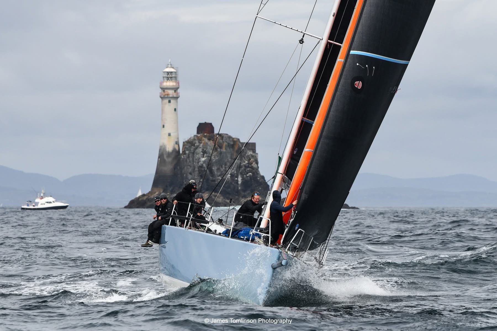
Kampagne 2027 bis 2029: Fastnet, Mittelmeer und zweimal über den Atlantik. Mit einer KER 46 in Moana Pigeon Blue. Das Boot ist finanziert, jetzt suchen wir Mitsegler und Partner, die mit eigenem Budget dabei sein wollen. Campaign 2027 to 2029: Fastnet, the Mediterranean and two Atlantic crossings. On a KER 46 in Moana Pigeon Blue. The boat is financed, now we are looking for sailors and partners who want to join with their own budget.
Das Moana Sailing Team ist ein Amateurteam, das wie ein Profiteam organisiert ist. Jede Kampagne hat einen klaren Plan: feste Rollen an Bord, ein definiertes Wachsystem, dokumentierte Abläufe für Vorbereitung, Sicherheit, Navigation und Logistik. So segeln wir seit über zehn Jahren auf Augenhöhe mit den besten Booten der Flotte. The Moana Sailing Team is an amateur team organised like a professional one. Every campaign follows a clear plan: fixed roles on board, a defined watch system, documented procedures for preparation, safety, navigation and logistics. That is how we have raced on level terms with the best boats in the fleet for more than ten years.
2024 und 2025 hat die Crew den Atlantik in beide Richtungen auf Regattakurs gequert und dafür den Schlüssel-Preis der Freien Hansestadt Bremen erhalten. Die bisherige Moana ist verkauft, das nächste Boot ist finanziert: eine KER 46 für die nächste Runde. In 2024 and 2025 the crew raced across the Atlantic in both directions and received the Key Award of the Free Hanseatic City of Bremen for it. The previous Moana has been sold and the next boat is financed: a KER 46 for the next loop.
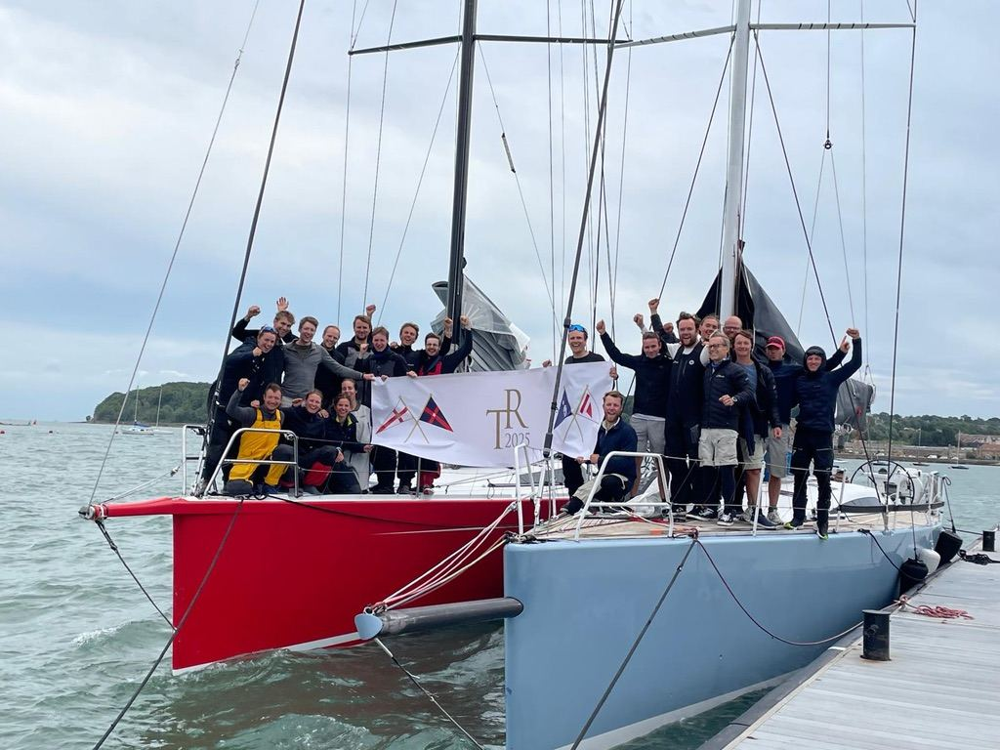
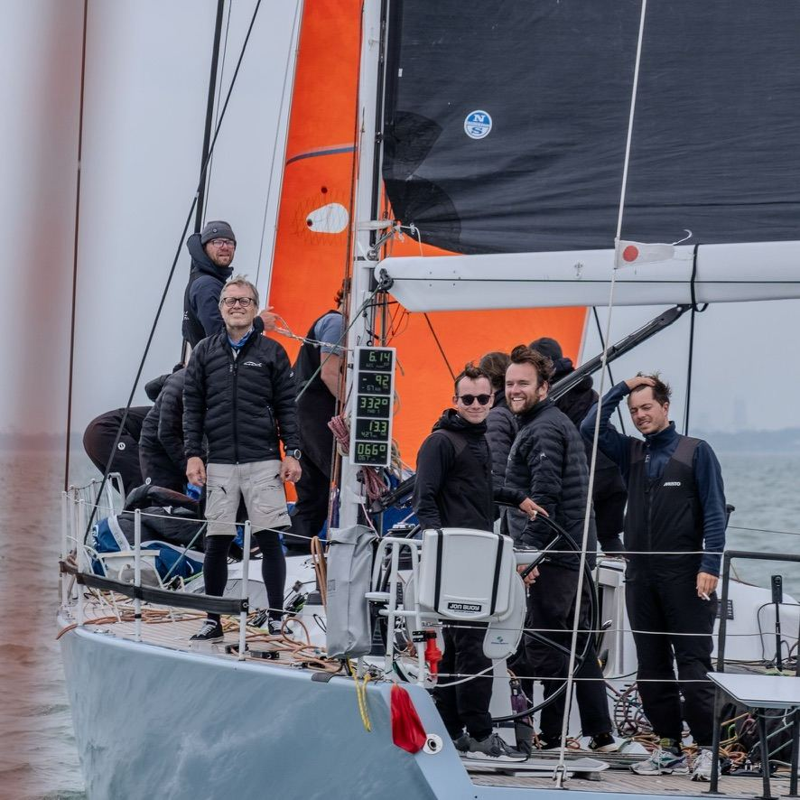
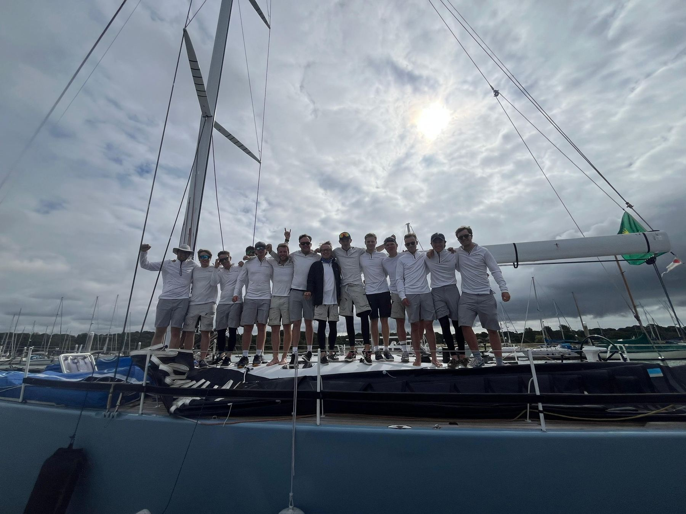
| JahrYear | Regatta / AuszeichnungRace / award | ErgebnisResult |
|---|
Drei Jahre, ein Ziel: die großen Offshore-Klassiker auf einem konkurrenzfähigen Boot. Wir starten mit dem Fastnet 2027, segeln 2028 im Mittelmeer und gehen im Winter 2028/29 auf die Atlantikrunde, mit dem Transatlantic Race nach Cowes als Rückweg und dem Fastnet 2029 als Finale. Three years, one goal: the great offshore classics on a competitive boat. We start with the 2027 Fastnet, race the Mediterranean in 2028 and set off on the Atlantic loop in winter 2028/29, with the Transatlantic Race to Cowes as the way home and the 2029 Fastnet as the finale.
Start in Cowes, rund um den Fastnet Rock. Auftakt mit dem neuen Boot.Start in Cowes, round the Fastnet Rock. First major race on the new boat.
≈ 695 smLes Voiles de Saint-Tropez undand Rolex Middle Sea Race. Danach Überführung auf die Kanaren.Then delivery to the Canaries.
≈ 606 smLanzarote nach Grenada, Ost nach West.Lanzarote to Grenada, east to west.
≈ 3.000 smRORC Caribbean 600 und weitere Regatten in der Karibik.RORC Caribbean 600 and further Caribbean regattas.
≈ 600 smNewport nach Cowes, West nach Ost. Die Rückregatta.Newport to Cowes, west to east. The race home.
≈ 3.000 sm Termin noch nicht ausgeschriebenDate not yet announcedFinale der Kampagne, direkt nach der Ankunft in Cowes.Campaign finale, straight after arriving in Cowes.
≈ 695 smRegattameilen in drei Jahren, ohne Überführungen. Dazu Training und Qualifikationsmeilen ab 2027.nautical miles of racing in three years, deliveries not included. Plus training and qualifying miles from 2027.
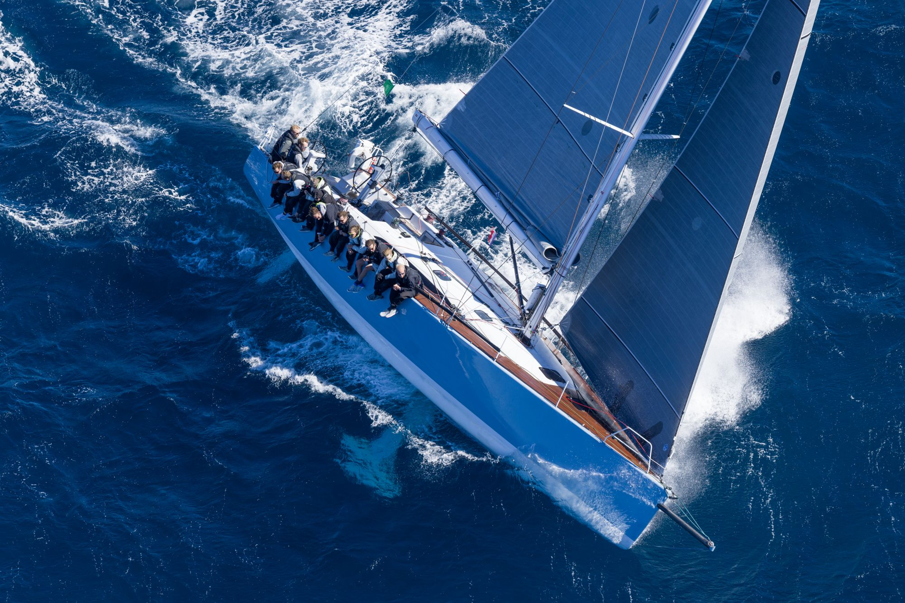
Eine KER 46 ist ein reinrassiges Offshore-Rennboot, schnell unter IRC und ORC und gebaut für lange Strecken auf dem offenen Meer. Genau das Boot für Fastnet, Middle Sea Race und den Atlantik.The KER 46 is a thoroughbred offshore racer, quick under IRC and ORC and built for long distances on open water. Exactly the boat for the Fastnet, the Middle Sea Race and the Atlantic.
Das Boot ist finanziert, die Crew steht. Wer schon immer im Racemodus über den Atlantik wollte, kann mit eigenem Budget einsteigen. Dafür gibt es drei Optionen.The boat is financed and the crew is in place. If you have always wanted to race across the Atlantic, you can join with your own budget. There are three options.
Auch Ausrüster und Dienstleister sind willkommen: Material, Segel, Elektronik oder Logistik gegen Präsenz an Bord und Praxistest unter Offshore-Bedingungen.Suppliers and service partners are welcome too: equipment, sails, electronics or logistics in exchange for presence on board and real-world testing offshore.
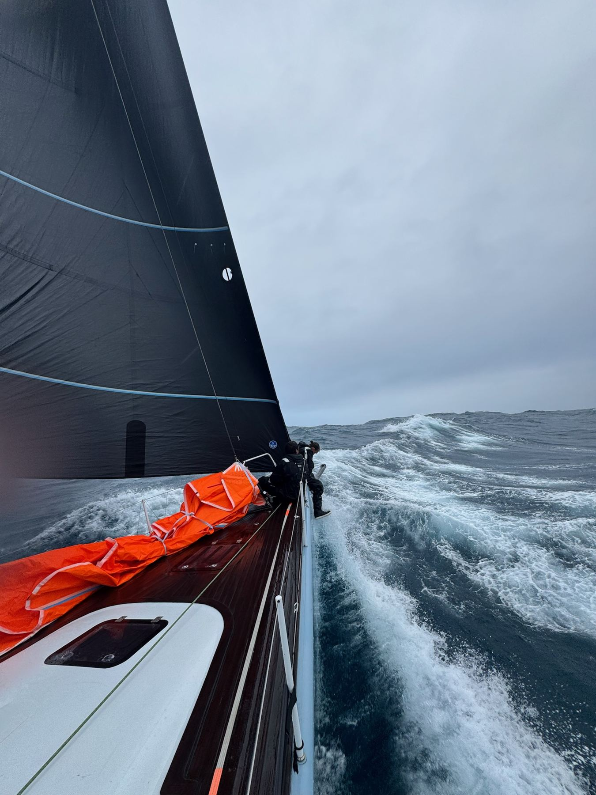
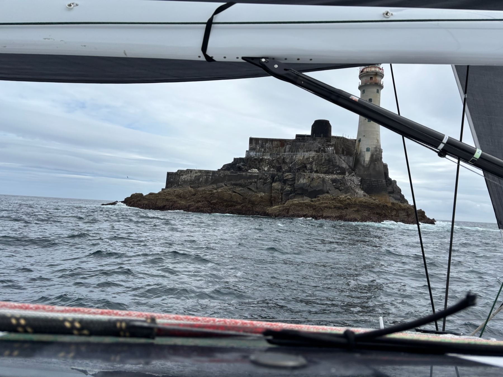
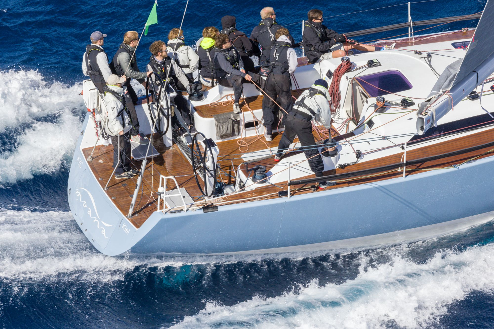
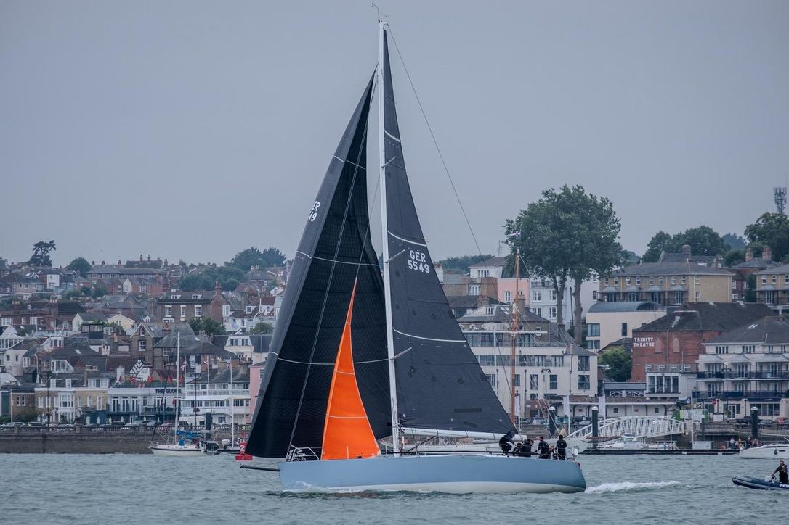
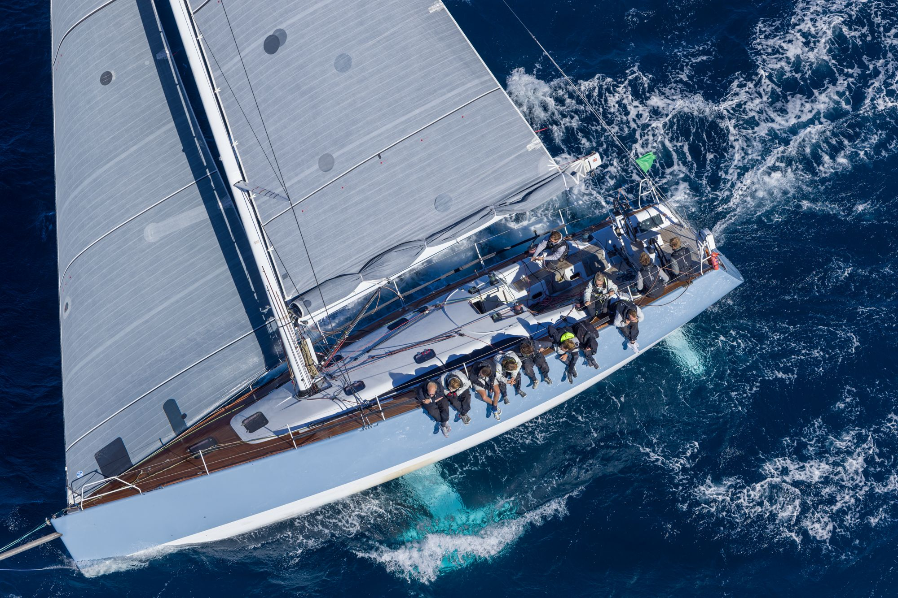
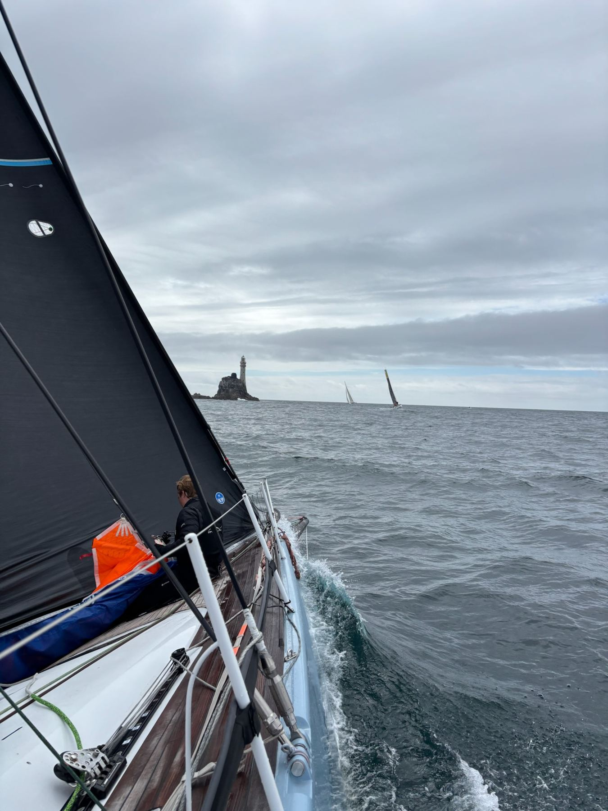